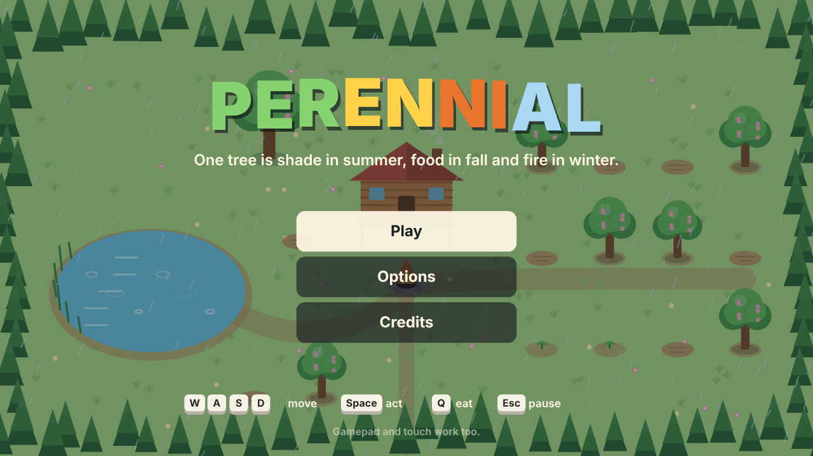
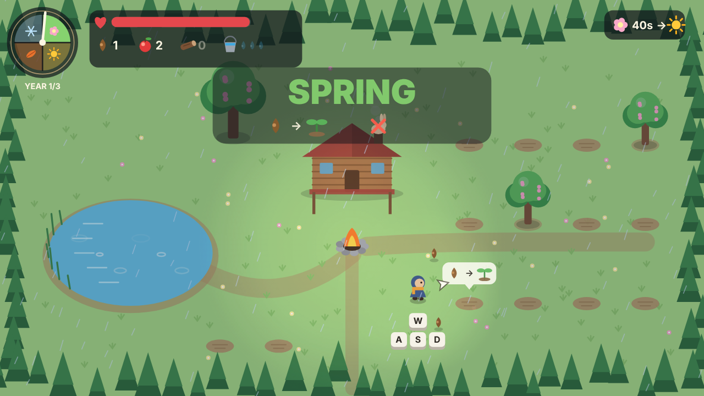
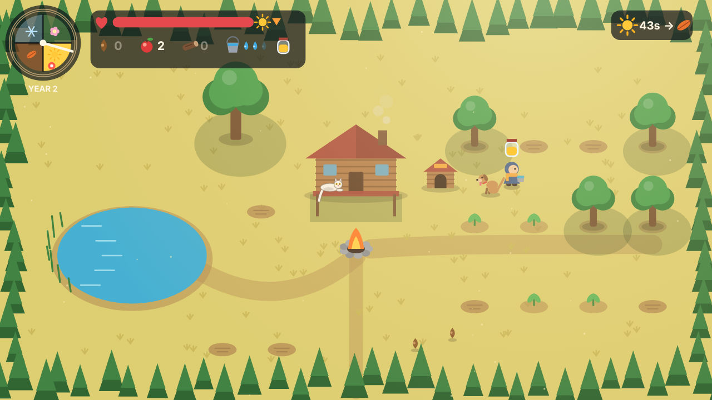
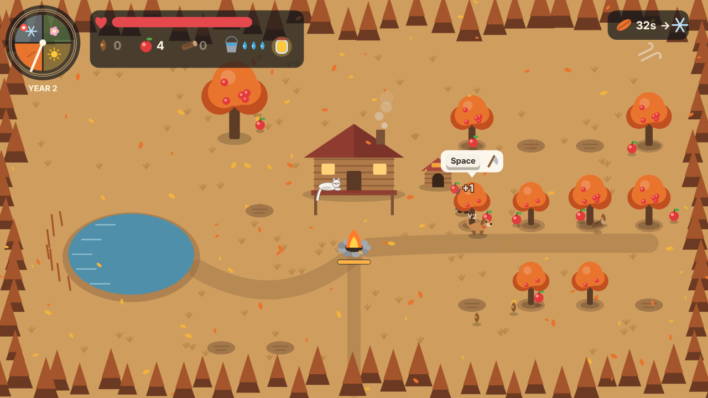
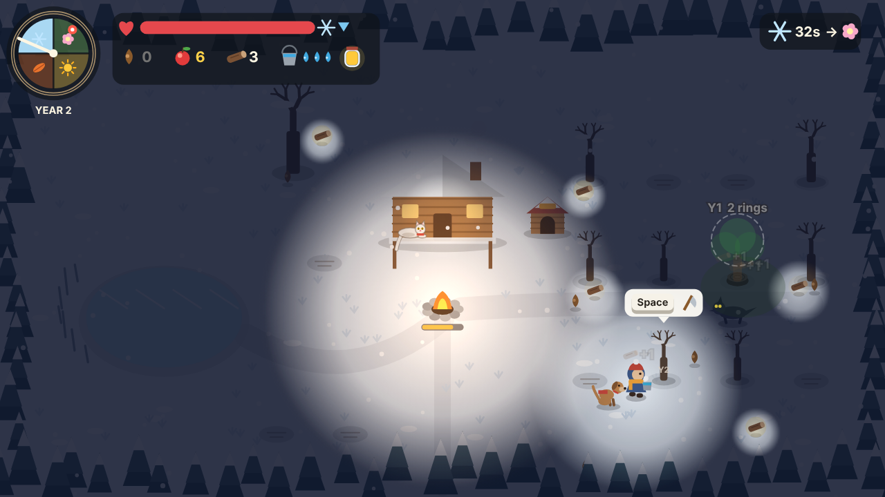
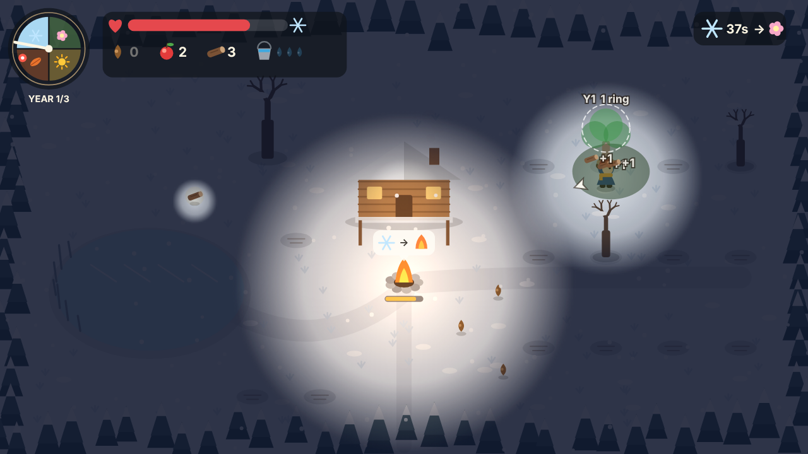
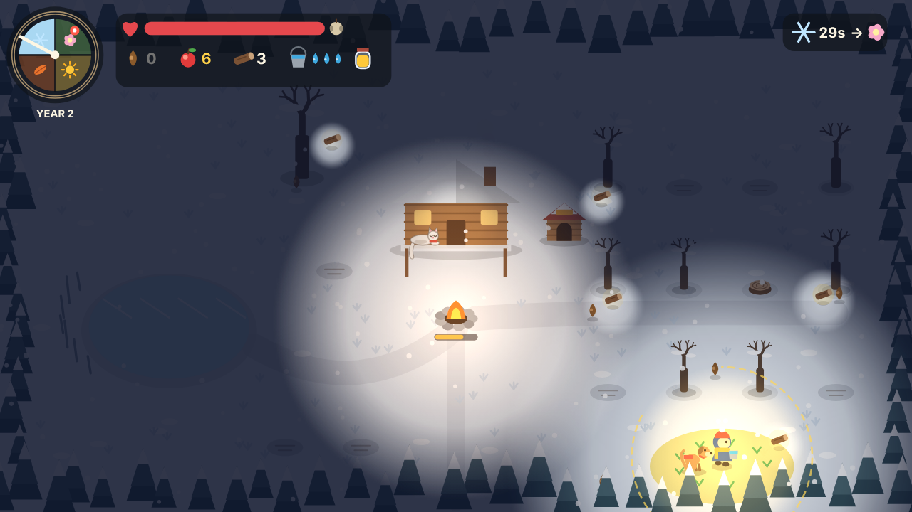
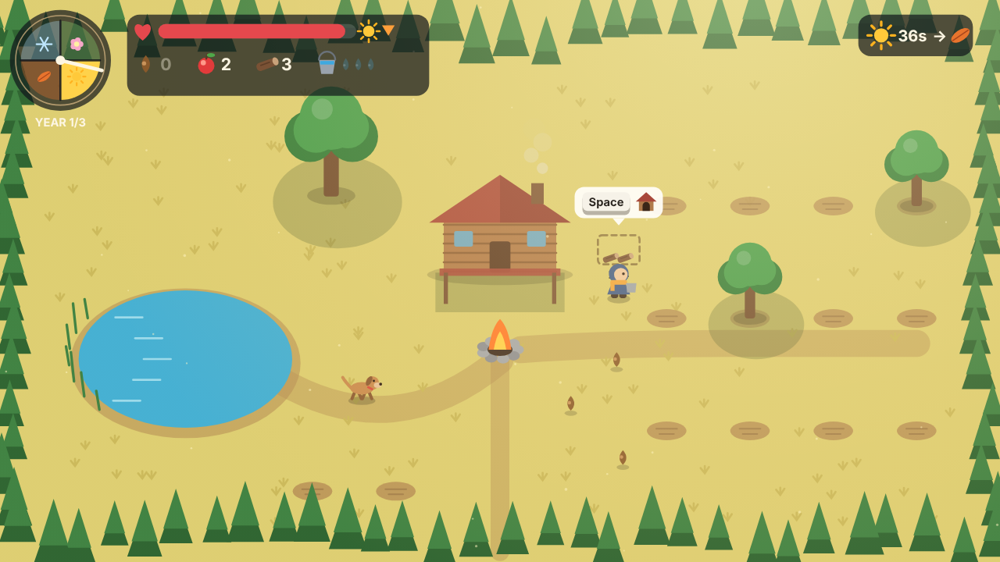
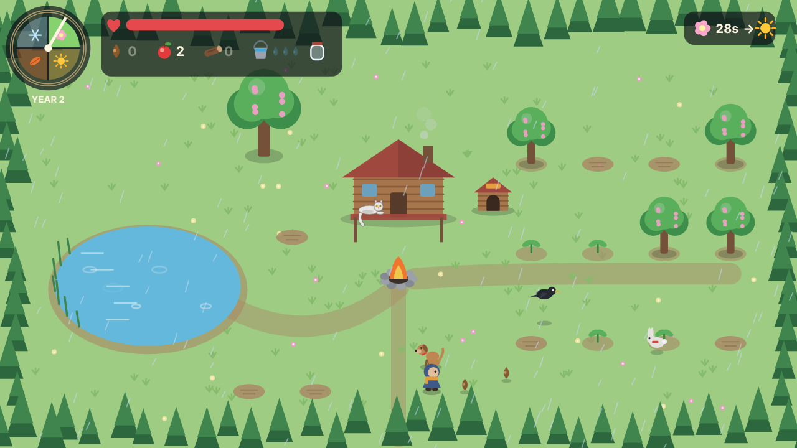
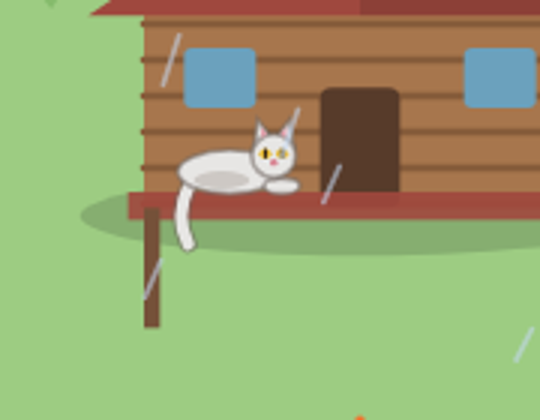

ThunderHacks II · Four Seasons
One tree is shade in summer, food in fall and fire in winter.
Aryan · Algoma Game Jam 2026

Summer
The only shelter from the sun, besides the porch.
Fall
Fruit, seeds for next spring, and branches.
Winter
Chop it for 2 or 3 logs, and it’s gone forever.
You can’t have all three. Every tree you burn tonight is one you won’t have next year.

Seeds can only be planted now.
Danger: rabbits eat sprouts.

Water sprouts from a shrinking pond.
Danger: heat outside the shade.

Sprouts become trees. Gather fruit and wood in the wind.
Danger: fruit left out rots.

Dark and slow. Keep the fire burning.
Danger: cold and wolves.
Three logs now, or shade and fruit next year?
Each tree is carved with the year you planted it. Chop it and the stump shows its rings, while a ghost of its summer shade flashes over it.
You see exactly what you gave up.


Summer
Fill it by standing in the sun. The heat costs you health.
Winter
Open it in the dark for 10 seconds of warmth, light and full speed.
It doesn’t stop wolves. That’s the dog’s job.

Adopt it in summer. Its house costs 4 wood, the same wood your fire needs. Then it chases rabbits, fetches fruit and barks wolves away.

Feed a hungry rabbit in fall and it guards your sprouts next spring. Let the crow take a seed and it returns two.

Arrives in year 2 and naps on the porch beam. Pet it and it purrs.
Summer wildfire, fall gust, winter blizzard.
Every pixel drawn in code, in one paper diorama style with four palettes.
Music and sound synthesized live, a different key and instrument each season.
Remappable keys, colour-blind palette, three difficulties, hint levels, reduce motion and volume.
One HTML file, offline, no install. Keyboard, gamepad or touch.
Zero third-party assets: no engine, library, image, sound or font file.
| Criterion | What we built |
|---|---|
| Theme | The seasons are the rules, not a backdrop. |
| Gameplay and fun | A short year, a tense first winter, a “one more year” pull. |
| Art and audio | One style, four palettes, live music for each season. |
| Playable build | One offline file. Survive 3 winters to win, then endless. |
| Originality | One object changes meaning every season, and the season itself is stored in a jar. |
So do the players.